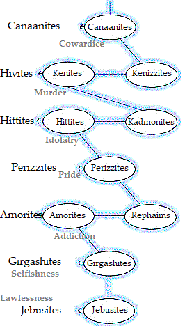

Selah!
Standing Still in Jordan at the Time of Harvest
Well, our time as spies in Canaan was not so difficult as I imagined it would be when the Spirit told me we should go. I'm pretty worn out-- especially as the Kadmonites seemed to get the worst of it; but I trust we will be able to continue together for a while, yet: we will need to review the thirteenth report on the land of promise, which came by John the Revelator. The message to the Churches of Asia will strengthen us all to press on. To overcome is to enter into the perfect rest of Y'SharAL.
Before proceeding, however, we will need to consider the Canaanites a little more closely. The dwelling places of ten nations are given for us to possess, but only seven are to be driven completely out of the promised land-- out of the tabernacle of flesh-- for the sake of its perfection in the service of the house made without hands. Further, these seven do not correspond precisely with the listing of ten. The expulsion of the seven is the threshing of the ten; and what remains on the threshing floor will have been thoroughly purged of all qualities contrary to the measurement of Y'SharAL.
The reports of Caleb and Joshua prepared us to make the kinds of distinctions that shall be necessary to sift the seven from the ten. We could sense that not all of the Canaanite qualities are, in every context, without merit; and careful pruning, along with appropriate fertilization, would make some of those traits fruitful in the service of Life.
Every characteristic of Canaanite practice of obstructing or hopelessly obscuring the center path is to be driven utterly out. Like the protective husks covering kernels of wheat, such garments belong to matters of Earth. No place for these will be found in Y'SharAL, the Body of Messiah: cowardice, egoism, opportunism, tyranny-- all these defense mechanisms are antithetical to the measurement of Yahushúa haMashiyach. They must go by acts of Yah, by the circumcision made without hands.
I had intended to pass upwards through Canaan on the center path, the second time around. This path, dominated by the narrow way leading from Malkuth to Yesod and through Tipareth to Kether, brings one from a broad focus upon ten spheres to a narrower focus upon the seven levels by which the spheres are positioned.
Taken as a succession of spiritual levels, Adam Kadmon symbolizes Jacob's Ladder. The points of these levels, as found along the center path, symbolize the seven chakras of Hindu traditions. Centered in the spinal column, these seven interior positions facilitate fulfillment of promise that "you shall see the heaven opened and angels of Elohim ascending and descending upon the Son of Man."
It is well that the Spirit opposed me in my plan to act as guide for the center path. The successful journey through the seven levels of awareness concerning the seven spirits of YHWH Echad comes only by the service demonstrated by Y'shúa; for He has already made that journey ahead of us and is Master of the Way. It remains only for us to follow, as he asks.
It will be expedient, however, for us to consider briefly some differences between the seven and the ten. Seven (zayin
 ) signifies rest, completion; ten (yod
) signifies rest, completion; ten (yod
 )
signifies action-- the manifestation of the underlying power and
authority gained by rest. When the stasis represented by the lethargic
seven is disrupted (driven out), the underlying ten are energized, more
hospitable to the rigors of purification. The Canaanite complacency in
bondage must be broken, that revival of the nations (of the biological
processes of life) can be applied to transformation according to the
measurement of Y'SharAL, the firstborn.
)
signifies action-- the manifestation of the underlying power and
authority gained by rest. When the stasis represented by the lethargic
seven is disrupted (driven out), the underlying ten are energized, more
hospitable to the rigors of purification. The Canaanite complacency in
bondage must be broken, that revival of the nations (of the biological
processes of life) can be applied to transformation according to the
measurement of Y'SharAL, the firstborn.
Of the Kenizzites (hunters) and Kenites (warriors), it is the Hivites that are first to be winnowed, then driven out. As their name implies, the Hivites identify as the progeny of Eve in her fallen state; and because the Eve of which our Fathers spoke is a spiritual being, we conclude that the Hivite quest for approbation is not according to the Father's Spirit. They reckon their lineage by blood, calibrating their spiritual status by ancestral standing, and their doctrines are learned by rote. The Hivites are proud of the trappings of carnality, and their warfare is abomination, because their converts are even worse than they, themselves; for they follow mere reports of reported teachings and never engage with matters of spirit firsthand.
Of the Kadmonites (ancestor worshippers) and the Hittites (terrorists), it is the Hittites that are to be driven out. With the Hivites gone before them, blood ancestors will be understood in their archetypical dimensions (we are lively stones comprising One House, after all), and the basis for the terrorism of one people warring against another will be removed. As humanity wakes to the reality that all are brothers, reconciliation will replace destruction as the remedy for difference.
Of the Rephaims (sycophants) and the Amorites (exhibitionists), it is the Amorites that are to be driven out. When every human is perceived as the offspring of the heavenly Father, whose patrimony is Life itself, idolization of an individual is no longer possible. The strengths and blessings given to any individual are seen as revelation of the Father's presence in that one life, and is to be shared and celebrated by all. Exhibitionism (pride of self) is antithetical to this perception, and it must go.
The elimination of the seven nations of Canaan is by the shaking of Heaven (mind, thought) and Earth (body, experience). What remains will be the perfection of the Son, the full measurement of Yah's Salvation. hwhy will overturn: until he to whom the kingdom belongs appears. As we follow Yahushúa, now, along the center path that leads to full reconciliation with HaShem, let us gladly open our hearts and minds to the Father's scrutiny and the Son's ministrations. In doing so, we will arise; and we shall shine, for our Light will have come.
Baruch HaShem!
| site |
Back in the Wilderness: The Seven Churches of Asia |
book |